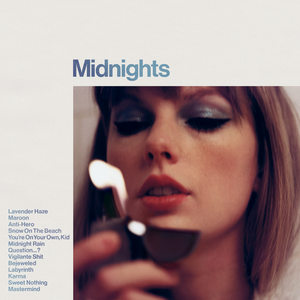
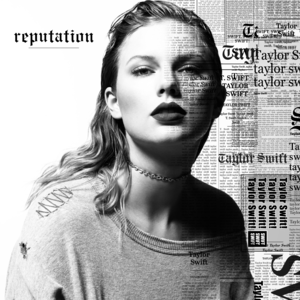
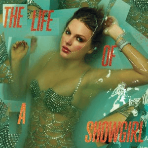

What did Taylor say? |
||
| Quote | Song | Album |
|---|---|---|
| "Everything you lose is a step you take." | YOYOK |  Midnights |
| "I'll stare directly at the sun but never in the mirror." | Anti-Hero | |
| "Long story short, I survived." | LSS | Evermore |
| "Never be so kind you forget to be clever." | Marjorie | |
| "People throw rocks at things that shine." | Ours | .png) Speak Now Speak Now |
| "Today is never too late to be brand new." | Innocent | |
| "Nothing good starts in a getaway car." | Getaway Car |  Reputation |
| “This is why we can't have nice things, darling — because you break them.” | TIWWCHNT | |
| "I swore my loyalty to me, myself, and I." | TFOO |  The Life of a Showgirl |
| “Oftentimes, it doesn’t feel so glamorous to be me.” | Elizabeth Taylor | |